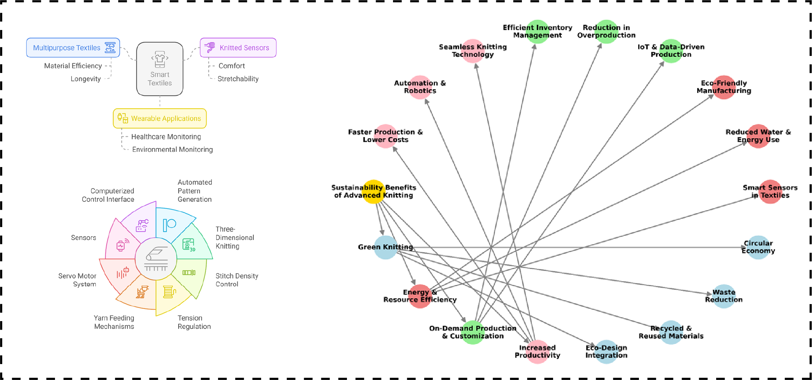
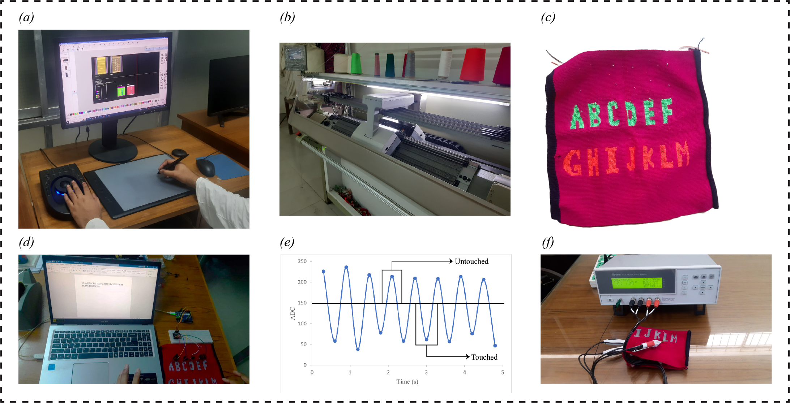
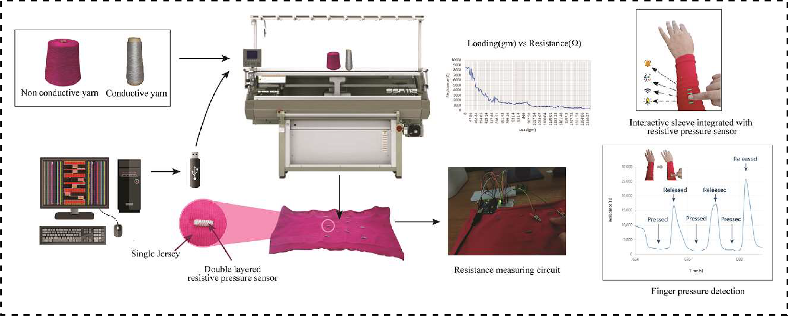

Publications

Safi Ahmed, Md. Mohaddesh Hosen*, Abdullah Al Saif, Md. Tanvir
Ahmed Khandaker.
Digital Machine Knitted Resistive Strain Sensor for Wireless Human Motion Monitoring. (Accepted) Advanced Engineering Materials, 2025.
Digital Machine Knitted Resistive Strain Sensor for Wireless Human Motion Monitoring. (Accepted) Advanced Engineering Materials, 2025.

Dewan Murshed Ahmed*, Afsana Mobin, Nadvi Mamun Pritha, Arif Istiak
Ador, Safi Ahmed, and Md. Raju Ahmed
Advanced Knitting Technology for Sustainable Fashion (Book Chapter)
Book: SDG 12 and Global Fashion Textiles Production. Springer, Singapore. [Paper]
Advanced Knitting Technology for Sustainable Fashion (Book Chapter)
Book: SDG 12 and Global Fashion Textiles Production. Springer, Singapore. [Paper]

Md. Mohaddesh Hosen*, Safi Ahmed.
Seamless Integration of Touch Sensing Smart Textiles through Computerized Machine Knitting
Journal of Engineered Fibers and Fabrics, Mar. 2025. [Paper]
Seamless Integration of Touch Sensing Smart Textiles through Computerized Machine Knitting
Journal of Engineered Fibers and Fabrics, Mar. 2025. [Paper]

Md. Mohaddesh Hosen*, Ahmadul Ferdous, and Safi Ahmed
Easily scalable and highly flexible machine knitted resistive pressure sensor for smart textile applications
Journal of Industrial Textiles, vol. 54, Aug. 2024. [Paper]
Easily scalable and highly flexible machine knitted resistive pressure sensor for smart textile applications
Journal of Industrial Textiles, vol. 54, Aug. 2024. [Paper]